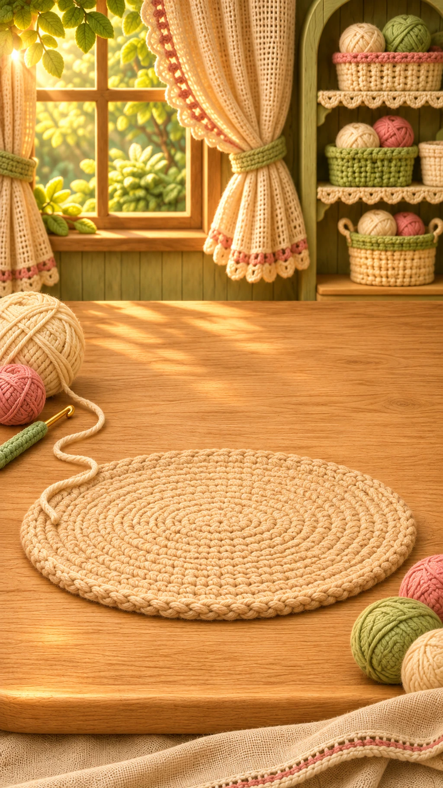

TECHNICAL PREVIEW — ART NOT APPROVEDЭтюд изготовления · отдельная проба, не новая версия игры

Лепесток за лепестком
Ромашка · первый лепесток
Касайтесь изделия или удерживайте «Вязать».
TECHNICAL PREVIEW — ART NOT APPROVEDЭтюд изготовления · отдельная проба, не новая версия игры

Ромашка · первый лепесток
Касайтесь изделия или удерживайте «Вязать».